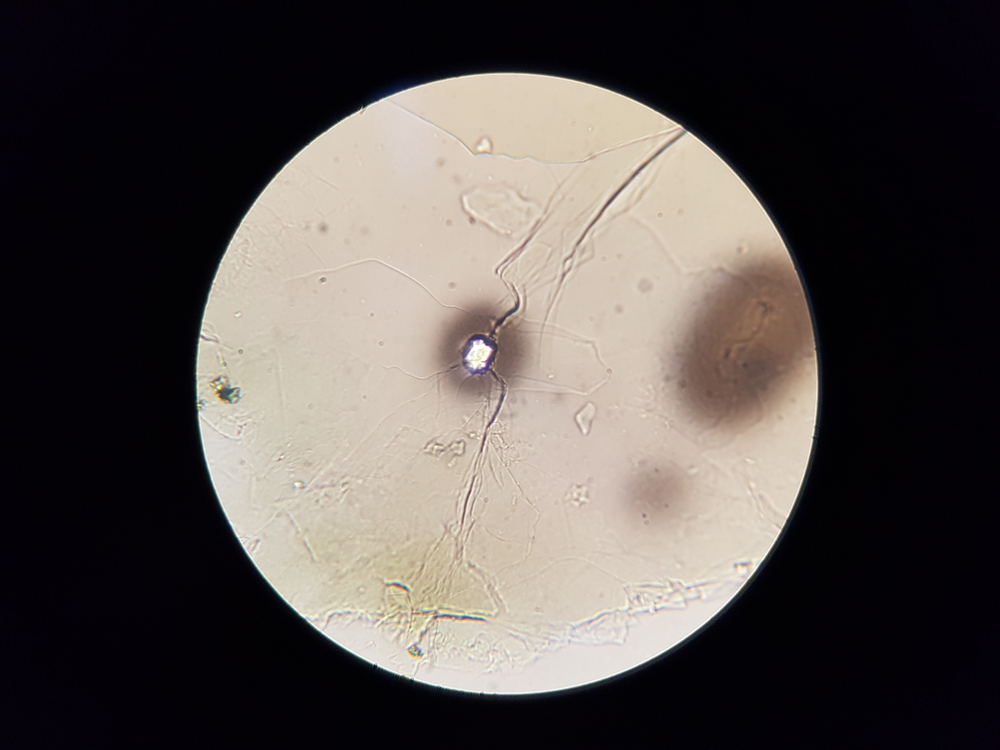

Radioactive halos, often called pleochroic halos are microscopic, spherical shell of discolouration within minerals such as biotite because of radiation damage caused by alpha particles emitted by radioactive minerals in the center.
Uranium-238 follows a sequence of decay through thorium, radium, radon, polonium, and lead. This process creates 8 halos.The final characteristics of a pleochroic halo depends upon the initial isotope, and the size of each ring of a halo is dependent upon the alpha decay energy.